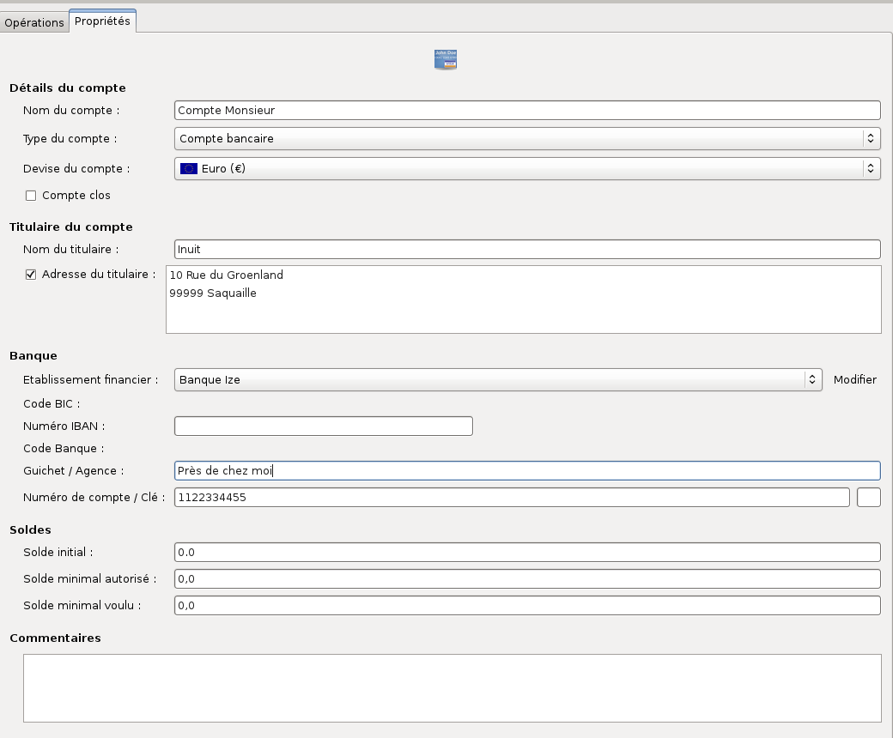
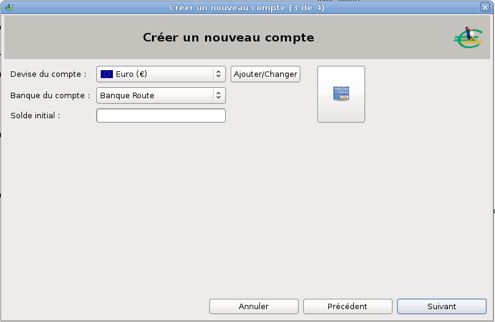
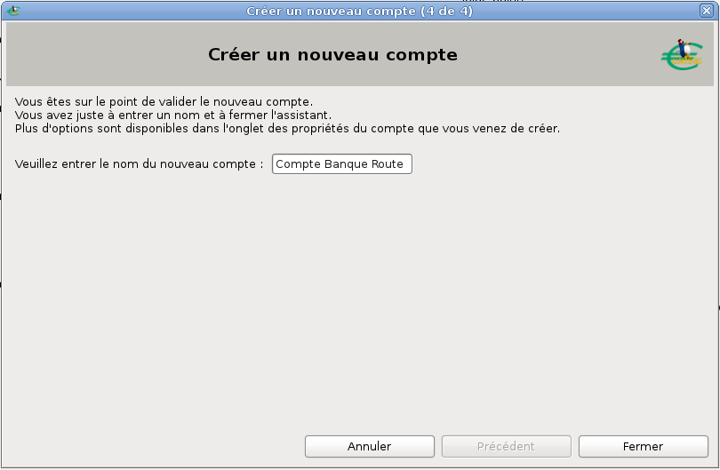

Grisbi sait gérer quatre types de compte, dont l’utilisation est décrite précisément dans la section 7.7, Types de compte de Grisbi :
Pour lister les comptes, déroulez d’abord l’onglet Comptes dans le panneau de navigation en cliquant sur le petit triangle à sa gauche. Le panneau de navigation affiche la liste des comptes, que vous pouvez faire défiler en cliquant successivement sur l’un des deux petits triangles à gauche dans la barre d’information.
Note : ces triangles peuvent être remplacés, en fonction du thème de l’environnement de bureau ou du gestionnaire de fenêtres que vous utilisez, par d’autres caractères tels que +, -, >, <, etc.
Vous pouvez modifier l’ordre d’affichage des comptes dans le panneau de navigation, en cliquant et déplaçant le nom d’un compte vers le haut ou vers le bas dans la liste des comptes du panneau de navigation.
Pour sélectionner et afficher le contenu d’un compte, utilisez l’une des méthodes suivantes :
Note : ces triangles peuvent être remplacés, en fonction du thème de l’environnement de bureau ou du gestionnaire de fenêtres que vous utilisez, par d’autres caractères tels que +, -, >, <, etc.
Le panneau de navigation affiche le nom du compte sur fond bleu ; la barre d’information affiche, à gauche, le nom du compte sélectionné et, complètement à droite, le solde de ce compte ; le pavé des détails affiche la liste des opérations dans l’onglet Opérations.
Le pavé des détails affiche par défaut deux onglets, pour les comptes de banque ou de caisse :
Il peut aussi afficher, si le module budgétaire a été activé pour le compte sélectionné, trois autres onglets qui ne sont pas décrits dans ce chapitre (voir le chapitre 17, Budgets Prévisionnels) :
Il se peut que certains comptes soient clos, donc leur affichage est masqué. Vous pouvez cependant les afficher en sélectionnant le menu Affichage - Montrer les comptes clos. Pour faire l’opération inverse, voir la section 7.3, Propriétés d’un compte.
L’onglet Propriétés permet de renseigner et d’afficher les informations relatives au compte sélectionné.

Figure 7.1: Propriétés d’un compte
Pour afficher les propriétés d’un compte, sélectionnez-le, puis cliquez sur l’onglet Propriétés dans le pavé des détails. Cet onglet affiche toutes les informations et propriétés qui ont déjà été renseignées sur le compte sélectionné. Pour modifier ces données, voir la section 7.5, Modifier un compte.
Voici les différentes informations qu’un compte peut contenir :
Note : dans le cas d’une comptabilité numérotée (association ou petite entreprise), les noms des comptes sont précédés du numéro fourni par le plan comptable, par exemple «512. Compte banque X » ; ce libellé est donc une donnée alphanumérique.
Note : avant de commencer la création d’un nouveau compte, il est conseillé de consulter la section 7.7, Types de compte de Grisbi, et la section 22.5.5, Modes de règlement, qui donnent beaucoup plus de détails sur les possibilités que Grisbi vous propose.
Pour créer un nouveau compte dans votre fichier de comptes, cliquez sur le menu Édition - Nouveau compte ; l’assistant de création de compte s’ouvre, qui comprend cinq étapes :
Note : lorsque vous créez un nouveau compte, faites attention à choisir un type de compte correct, sinon vous pourriez être amené, plus tard, à transférer toutes les opérations que vous y auriez saisies dans un nouveau compte plus adéquat.

Figure 7.2: Création d’un nouveau compte
Note : il est conseillé de laisser le solde initial du compte à zéro et, si besoin est, de créer par la suite une opération initiale du montant nécessaire, car cela facilitera la gestion future des rapprochements.

Figure 7.3: Saisie du nom du nouveau compte
Si, et seulement si vous venez de créer votre fichier de comptes juste avant cette création de compte, revenez à la fin de la section 3.3, Création d’un nouveau fichier de comptes. Allez juste après la fin de la procédure de création du fichier de comptes, au paragraphe commençant par D’une manière ou d’une autre… , ce qui vous proposera de créer tout de suite d’autres comptes.
Sinon, vous pouvez commencer à utiliser le compte que vous venez de créer.
Vous pouvez aussi configurer précisément les modes de règlement des opérations de ce compte dans le menu Édition - Préférences (voir la section 22.5.5, Modes de règlement).
Pour modifier un compte, sélectionnez le compte dans le panneau de navigation ou avec la barre d’information, puis cliquez sur l’onglet Propriétés dans le pavé des détails.
Les champs suivants doivent obligatoirement être renseignés :
Tous les autres champs sont facultatifs.
Vous pourrez modifier à tout moment toutes ces informations, sauf la devise si vous avez choisi l’euro, ou si vous avez converti en euro un compte existant, comme indiqué dans la section 7.8, Conversion d’un compte en euros.
Les champs Type du compte, Devise du compte, Établissement financier donnent accès à une liste déroulante permettant de renseigner le champ.
Les champs de texte peuvent être remplis au clavier, et un menu contextuel accessible par un clic-droit dans un champ de saisie permet d’effectuer les actions suivantes :
Les methodes de saisie permettent de changer les caractères accentués.
Insérer un caractere de controle Unicode permet d’insérer un code Unichar qui modifie la présentation ; par exemple RLO (forçage droite-à-gauche) renverse l’ordre des lettres et la position du texte.
Attention : si vous modifiez certaines propriétés comme le type du compte, cela nécessitera d’adapter aux nouvelles propriétés du compte, individuellement, toutes les opérations déjà saisies. Dans tous les cas, avant de procéder à une quelconque modification des comptes, faites impérativement une sauvegarde de votre fichier de comptes.
Pour supprimer un compte, cliquez sur le menu Édition - Supprimer le compte courant. Une boîte de dialogue de confirmation s’ouvre ; si c’est vraiment ce que vous voulez, validez la suppression.
Attention : il n’y aura pas d’autre avertissement, et le compte est supprimé (ainsi que toutes ses opérations). Cette opération est irréversible !
Comme énoncé en début de chapitre, Grisbi sait gérer quatre types de compte :
Cette section décrit les fonctionnalités et l’utilisation de chacun de ces types de compte.
Le type de compte compte bancaire admet tous les types d’opérations, en débit ou en crédit. De ce fait, il doit être utilisé pour tous les comptes suivants :
Les paragraphes suivants décrivent ces comptes qui doivent utiliser le type de compte compte bancaire.
Ces comptes servent à enregistrer toutes les opérations que vous pouvez faire avec votre banque :
Un compte de carte de crédit est un compte de carte bancaire qui peut recevoir du débit, mais aussi du crédit, soit sous forme de virement, soit sous forme de prêt (par ex. un crédit renouvelable). Son solde peut donc être positif ou négatif.
Un compte d’attente sert à enregistrer des opérations (normalement des recettes) en attendant de les virer vers un compte bancaire ou de caisse. Il est normalement créditeur, jusqu’au moment du virement vers le compte bancaire ou de caisse, qui le ramène à un solde nul.
La remise de chèques et la remise d’espèces sont des exemples-type de l’utilité du compte d’attente.
Si vous recevez peu ou peu souvent de chèques (ou d’espèces), le plus simple est de les saisir directement dans votre compte bancaire (ou dans votre compte de caisse). Dans ce cas, reportez-vous à la section 8.6.6, Remise de chèques ou d’espèces.
Mais si vous recevez beaucoup de chèques (par exemple parce que vous gérez une association et que vos adhérents payent leur cotisation par chèque), le plus efficace est d’utiliser un compte d’attente.
La méthode consiste donc à créer un compte d’attente, que vous nommez par exemple Chèques à encaisser. Au fur et à mesure de la réception des chèques, vous les enregistrez individuellement dans ce compte, donc chaque chèque correspond à un Tiers. Quand vous déposez les chèques à la banque, vous faites un virement de ce compte Chèques à encaisser vers votre compte bancaire, du montant de l’ensemble de ces chèques, donc du solde du compte Chèques à encaisser. Utilisez pour l’occasion un tiers Remise de chèques, et dans le champ Remarques, saisissez le numéro de votre bordereau de remise.
Le solde du compte Chèques à encaisser revient alors à zéro, et le compte bancaire est crédité du montant de la remise, exactement comme le sera votre relevé bancaire. Ainsi vous gardez et l’information du tiers pour chaque chèque, et celle de la remise globale.
Vous faites ensuite un pseudo-rapprochement du compte Chèques à encaisser en simulant un relevé de solde nul avant la prochaine réception d’un chèque : vérifiez que ce rapprochement a bien un numéro, ou donnez-en lui un, par exemple REM-01, ce qui vous permettra ultérieurement de retrouver quel chèque faisait partie de quelle remise. Ce pseudo-rapprochement est appelé lettrage.
Par exemple, si vous avez reçu deux chèques, vous enregistrez dans votre compte Chèques à encaisser les deux opérations :
Puis lors de la remise des deux chèques à la banque, dans votre compte bancaire, vous enregistrez l’opération :
Note : vous pouvez enregistrer cette opération soit dans votre compte bancaire en Crédit et Catégorie : Virement : Chèques à encaisser, soit dans votre compte Chèques à encaisser en Débit et Catégorie : Virement : Compte bancaire ; dans les deux cas, Grisbi crée automatiquement la contre-opération dans l’autre compte.
Le compte Chèques à encaisser est alors soldé à zéro, mais il garde la trace des chèques déposés à la banque, et dans votre compte bancaire n’apparaît que le montant global du bordereau de remise, que vous pourrez pointer avec votre relevé de compte de la banque.
Bien entendu, si une partie de vos adhérents vous paye en espèces, vous pouvez utiliser de la même façon un compte nommé par exemple Remise d’espèces.
Un compte d’avances sert à enregistrer à la fois les avances que vous recevez et celles que vous consentez. Il peut s’agir, par exemple, d’une avance sur votre salaire ou d’un achat que vous faites pour le compte d’un de vos amis.
Note : le compte d’avances peut être déroutant pour le novice, puisqu’il fonctionne à l’envers, comme vous le découvrirez plus loin. Pour vous faciliter les choses, vous pouvez considérer que le compte d’avances se comporte comme un tiers qui vous donne ou à qui vous donnez de l’argent.
quand vous recevez une avance, vous enregistrez l’opération par un virement du compte d’avances vers un compte bancaire. Le tiers sera la personne ou l’organisation de qui vous recevez l’avance, et la catégorie sera Virement : Compte bancaire. Dans le champ Notes, vous indiquez le motif de l’avance. Le compte d’avances est donc débiteur quand vous devez de l’argent. Lorsque vous remboursez cette avance, vous faites un virement du compte bancaire, avec le même tiers et la même remarque, vers le compte d’avances, dont le solde redevient nul.
Pour une avance en espèces, remplacez le compte bancaire par un compte de caisse.
Dans le cas où l’avance vous est versée par chèque, et si vous avez créé un compte d’attente Chèques à encaisser, vous devrez d’abord enregistrer le chèque dans le compte d’avances, puis faire un virement du montant du chèque, du compte d’avances vers ce compte Chèques à encaisser, et ensuite faire votre virement de remise de chèque, de ce compte Chèques à encaisser vers votre compte bancaire (voir le paragraphe 7.7.1, Compte d’attente).
Vous ferez ensuite un rapprochement du compte d’avances pour faire disparaître ces opérations.
inversement, si vous consentez une avance, vous enregistrez l’opération par un virement d’un compte bancaire vers le compte d’avances. Le tiers sera la personne ou l’organisation à qui vous faites l’avance, et la catégorie sera Virement : Compte d’avances. Dans le champ Remarques, vous indiquerez le motif de l’avance. Le compte d’avances est donc créditeur quand on vous doit de l’argent. Lorsque cette avance vous est remboursée, vous enregistrez l’opération par un virement du compte d’avances vers le compte bancaire, avec le même tiers et la même remarque, et la catégorie sera Virement : Compte bancaire. Le solde de votre compte d’avances redevient nul.
Pour une avance en espèces, remplacez le compte bancaire par un compte de caisse.
Dans le cas où l’avance vous est remboursée par chèque, et si vous avez créé un compte d’attente Chèques à encaisser, vous devrez d’abord enregistrer le chèque dans le compte d’avances, puis faire un virement du montant du chèque, du compte d’avances vers ce compte Chèques à encaisser, et ensuite faire votre virement de remise de chèque, de ce compte Chèques à encaisser vers votre compte bancaire (voir le paragraphe 7.7.1, Compte d’attente).
Vous ferez ensuite un rapprochement du compte d’avances pour faire disparaître ces opérations.
Un compte d’avances vous permet donc de vérifier facilement si vos créances ou vos dettes sont éteintes. Sans cette méthode cette vérification est difficile, sinon impossible.
Note : lorsque vous faites un état des recettes et dépenses, ces opérations devraient être transparentes, puisqu’elles s’annulent deux à deux quand chaque avance est remboursée. En pratique, lors de l’édition de ce genre d’état, vous devrez le configurer pour qu’il ne prenne pas en compte les virements entre comptes, et ainsi ces opérations seront totalement invisibles (voir la section 21.2.2, Virements).
Note : lorsque vous créez un nouveau compte, choisissez donc de préférence le type de compte compte bancaire, sauf si votre nouveau compte devra avoir une utilisation plus spécifique comme celles décrites dans les paragraphes ci-dessous.
Le type de compte compte de caisse est destiné uniquement aux opérations réglées en espèces ; vous ne pouvez pas y sélectionner de mode de paiement et il ne peut en aucun cas devenir négatif. De ce fait, il doit être utilisé pour tous les comptes suivants :
Un compte de caisse permet d’enregistrer dans votre comptabilité les retraits de la banque, pour alimenter la caisse, et les recettes et dépenses en espèces. En ce qui concerne les dépenses, il n’est pas toujours possible ni même utile d’enregistrer toutes les menues dépenses. Mais vous pouvez les enregistrer globalement, par exemple en fin de mois, dans des catégories adéquates ou bien dans une catégorie Dépenses diverses, ceci afin de vider ce compte de caisse. Comme ceci, vous n’aurez pas de flou dans la caisse.
Un compte de caisse accepte les virements en provenance d’autres comptes. Lorsque vous faites un retrait en espèces sur votre compte bancaire, enregistrez-le en tant que virement vers le compte de caisse.
Le type de compte compte de passif est un compte qui représente une dette, par exemple un emprunt. De ce fait, il doit être utilisé pour tous les comptes suivants :
Un compte d’emprunt sert à gérer un emprunt. Son solde initial est nul, mais, dès que vous contractez une dette, il devient négatif du montant de cette dette, et augmente ensuite à chaque remboursement versé, pour devenir nul après son dernier remboursement.
En pratique, le solde initial de ce compte est nul, mais il devient (fortement) négatif dès la première opération, à savoir le virement, par l’organisme de crédit, du montant de l’emprunt sur votre compte courant. Vous enregistrez à ce moment-là un virement du compte de passif vers ce compte courant, ce qui vous permet de procéder à votre achat.
Par exemple, quand l’organisme de crédit Crédit Bitoire vous verse le montant de 20 000 pour acheter chez Auto Matique une voiture qui coûte 25 000, vous créez un compte de passif appelé Emprunt, et dans ce compte, vous saisissez l’opération suivante :
Note : si ce virement est fait directement par l’organisme de crédit sur le compte du vendeur, la catégorie devra être, par exemple, Virement : Compte Immobilisation; vous pouvez n’avoir qu’un seul compte d’immobilisation pour tous vos biens, ou bien un compte par bien acheté.
À chaque fois que vous versez une échéance de votre emprunt, vous enregistrez un virement de votre compte courant vers le compte Emprunt, du montant du capital remboursé, en catégorie Virement : Emprunt, et une dépense sur ce compte courant, du montant des intérêts, en catégorie Frais financiers : Charges d’emprunts. Éventuellement, ajoutez-y une dépense pour l’assurance, en catégorie Assurances. De cette façon, vous saurez à tout moment le montant du capital restant à rembourser, mais aussi le coût de l’emprunt.
Par exemple, à chaque échéance, vous saisissez une opération ventilée sur votre compte courant :
N’oubliez pas que, si le montant de l’échéance est constant, à l’intérieur de chaque échéance suivante, le capital remboursé augmente et l’intérêt versé diminue (voir le tableau d’amortissement de l’emprunt).
Vous pourrez donc parfaitement utiliser un compte de passif pour gérer vos emprunts ; comme Grisbi ne propose pas pour l’instant la ventilation automatique des remboursements d’emprunt (amortissements, intérêts et frais reportés automatiquement de votre tableau d’amortissement), vous pourrez tout de même saisir une opération planifiée et ventilée pour les remboursements, en mode manuel ou automatique, et vous ajusterez les montants à chaque échéance selon votre tableau (voir la section 16.3, Tableau d’amortissement).
Lorsqu’un compte de passif est soldé, ce qui signifie que vous avez remboursé la dette correspondante, Grisbi vous prévient en affichant un message dans la partie inférieure du pavé des détails de la page d’accueil (voir le chapitre 4, Accueil).
Les cartes bancaires à débit différé peuvent être gérées de différentes manières, mais il est préférable de les gérer dans un compte spécifique, qui sera de type compte de passif, puisque leur solde ne peut pas être positif.
Vous trouverez tous les détails pour gérer correctement ces cartes bancaires dans la section 18.2, Carte bancaire à débit différé.
Le type de compte compte d’actif est un compte qui représente un bien, par exemple une voiture. Son solde initial est nul, mais il devient positif dès que vous possédez ce bien, d’un montant égal à sa valeur, puis il diminue avec le temps à mesure de sa dépréciation, pour finir à une valeur nulle. Les opérations se font par virement. On peut le considérer comme le contraire d’un compte de passif.
En pratique, le solde initial de ce compte est nul, mais il devient (fortement) positif dès la première opération, à savoir l’achat de ce bien. Vous enregistrez à ce moment-là un virement de votre compte courant vers ce compte d’actif, égal au prix d’achat du bien, ce qui vous permet de procéder à votre achat.
Par exemple, quand vous achetez la voiture à 25 000 chez Auto Matique, vous créez un compte d’actif appelé Compte Immobilisation, et dans votre compte courant, vous saisissez l’opération suivante :
Votre compte Immobilisation enregistre donc une opération en crédit, du montant de cette voiture.
À chaque fois que vous constatez une dépréciation de ce bien, vous enregistrez un retrait du compte d’actif, du montant de la dépréciation, dans la catégorie Amortissements : Dépréciation. Ces retraits pourront être faits jusqu’à ce que le solde du compte soit nul. De cette façon vous connaîtrez en permanence la valeur de votre bien.
Par exemple, au bout d’un an la cotation de votre voiture (par ex. dans votre journal préféré) a perdu une certaine valeur ; dans votre compte Immobilisation, vous saisissez l’opération suivante :
Lors de l’achat, le montant que vous possédez réellement est votre apport personnel. Au cours du temps, vous remboursez les mensualités de votre emprunt, tandis que votre bien se déprécie. Le solde des comptes d’actif et de passif vous donnera à tout moment le montant que vous possédez globalement.
Cette section devient de plus en plus obsolète au fur et à mesure que le temps passe, mais nous la maintenons encore pour vous permettre l’éventuel import de vieux fichiers de compte.
Cette fonction n’existe plus à partir de la version 0.8 de Grisbi. Donc, si vous avez absolument besoin de réaliser cette opération, le seul moyen serait de la faire en utilisant une version précédente, de la manière suivante :
Attention : cette procédure n’est qu’une proposition, et n’a pas été testée avec toutes les versions précédentes de Grisbi. C’est pour cela qu’il est de la plus haute importance de sauvegarder auparavant votre fichier de comptes en lieu sûr.
Attention : d’une manière générale, il est déconseillé d’avoir des accents ou des espaces dans les noms des répertoires et fichiers utilisés par Grisbi. Si c’est le cas, renommez-les maintenant. Par exemple, les espaces peuvent être remplacées par des tirets bas (_).